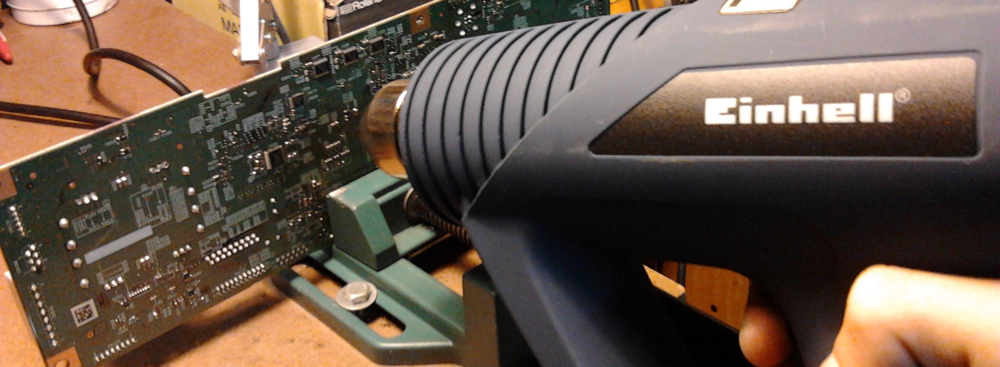

Zekrom's Electronics Color codes our LED's with colored tips.
The competators do not, just marking the bag so you have to test each one to find the color you want.
We lable each transistor and mosfet with it's type and triger voltage.
Radio Shack only has the serial number on it so you have to test it or look it up.
We save you money by providing good parts by providing salvaged parts from people that want to get rid of it, you could even earn store credit and help reduse trash!

No one elece provides salvaged parts at a discont, you will have to buy new if you don't buy form Zekrom's Electronics.